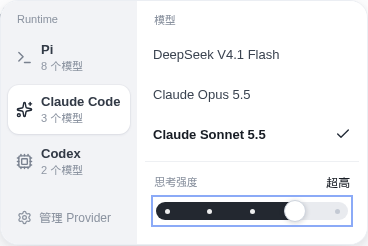
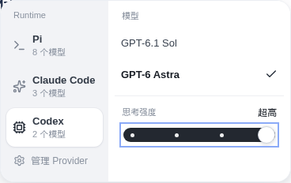
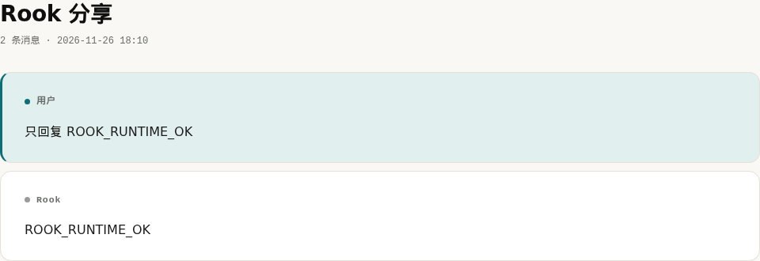

Multica Runtime 验收
我在生产 Chat 选择模型和 effort，并发起真实模型调用。两次 Run 均成功。两个 HTML 分享均可在登录后打开，且各包含一条合成提问和一条回复。
Claude Code
Claude Sonnet 5.5 · xhigh

Codex
GPT-6 Astra · xhigh


我在生产 Chat 选择模型和 effort，并发起真实模型调用。两次 Run 均成功。两个 HTML 分享均可在登录后打开，且各包含一条合成提问和一条回复。
Claude Sonnet 5.5 · xhigh

GPT-6 Astra · xhigh

